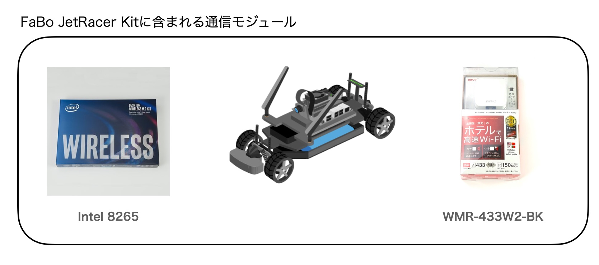
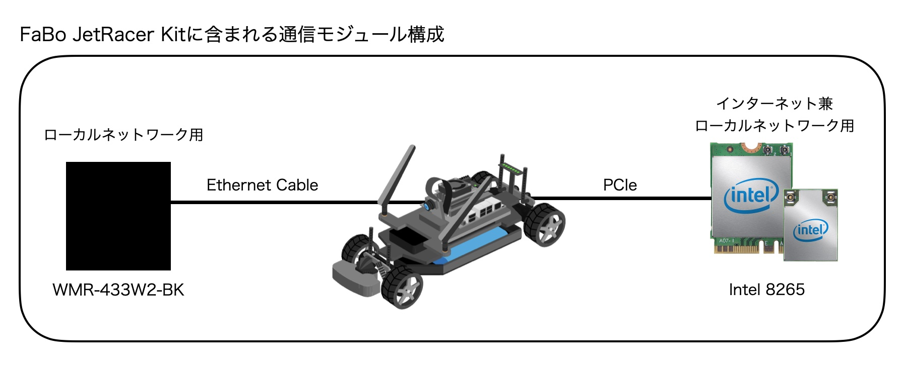
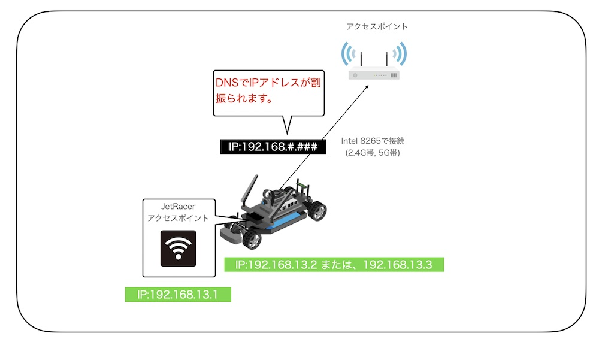
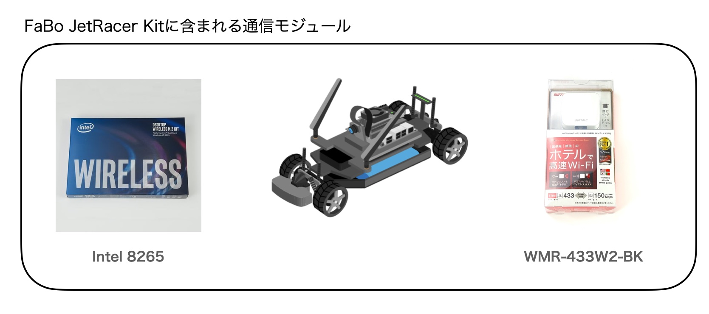
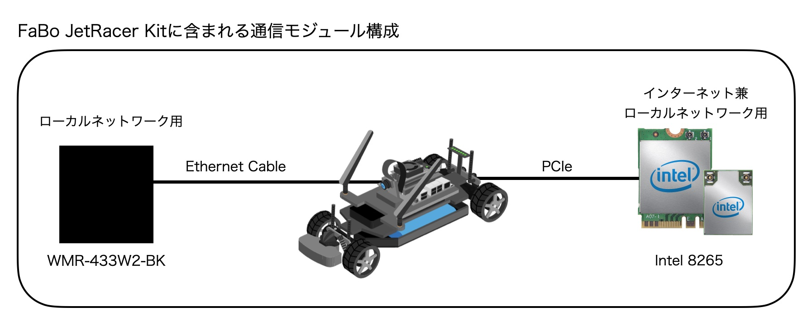
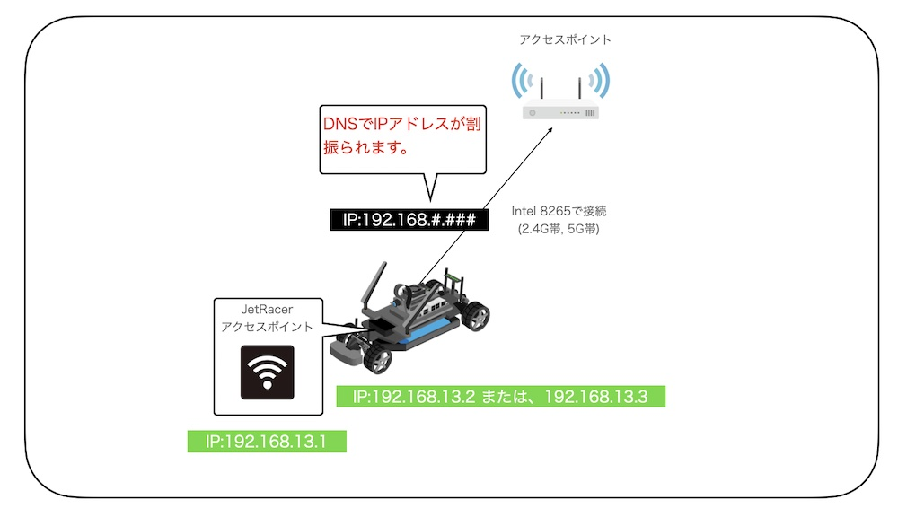

ネットワーク構成
全項目では、Wi-Fiモジュールを経由し、インターネットに接続し、JetRacerに必要なパッケージをインストールしました。JetRacerの実際の走行には、Wi-Fi環境のない場所や屋外等での操作が必要になるケースがあります。拡張ルーターは、そのようなケースに便利なアイテムです。
FaBo JetRacer Kitに含まれるネットワークモジュール

2つのモジュールの配置


ネットワーク構成図

JetRacerへの接続経路


全項目では、Wi-Fiモジュールを経由し、インターネットに接続し、JetRacerに必要なパッケージをインストールしました。JetRacerの実際の走行には、Wi-Fi環境のない場所や屋外等での操作が必要になるケースがあります。拡張ルーターは、そのようなケースに便利なアイテムです。


